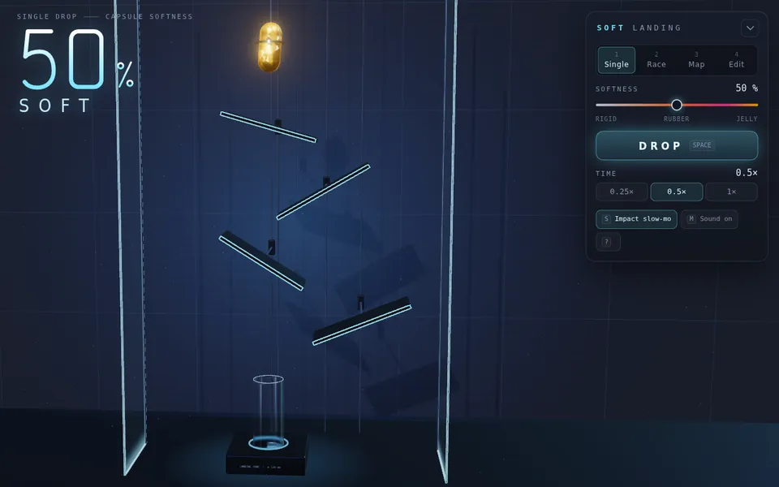
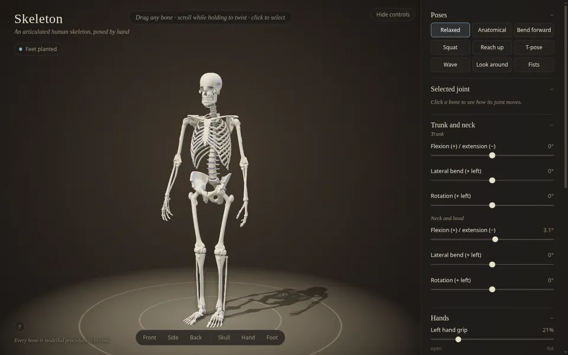
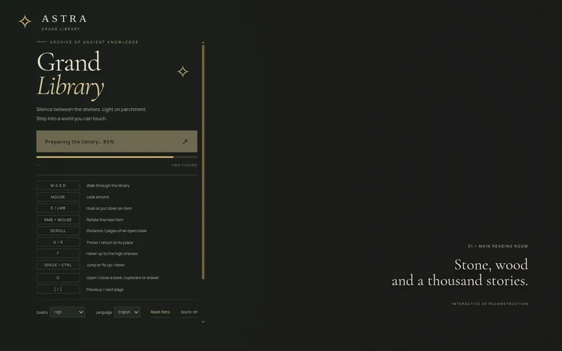
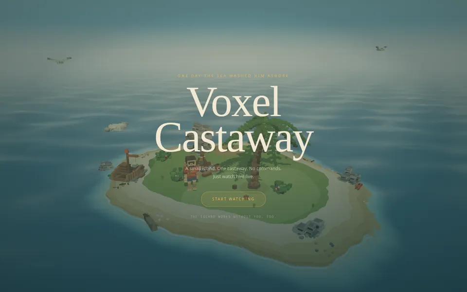
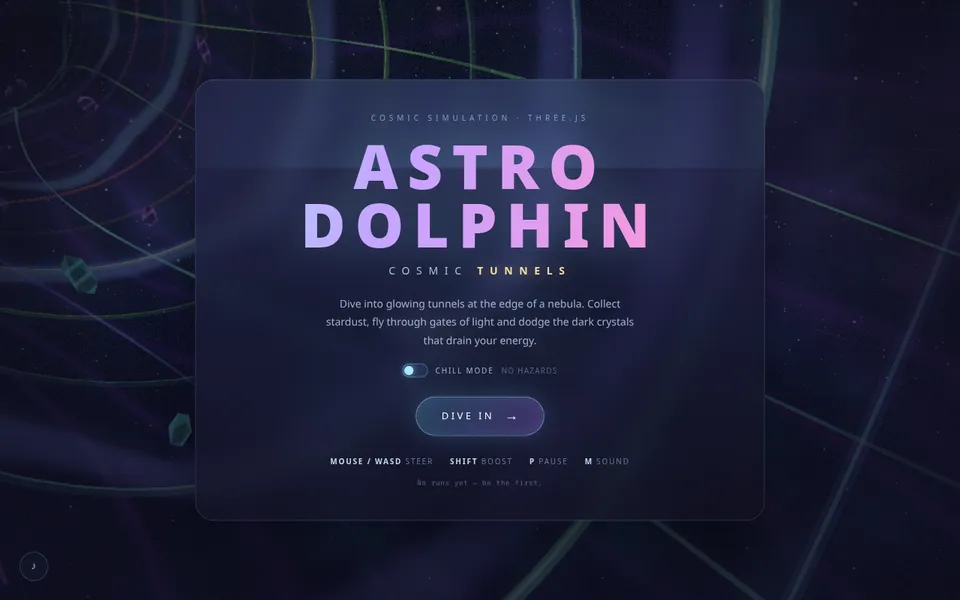
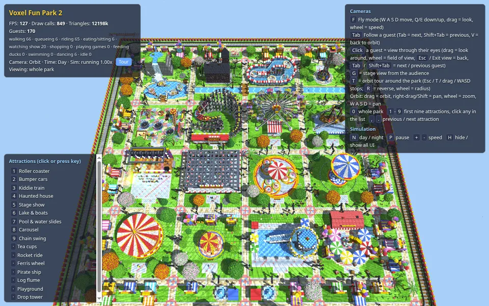

Demos

Soft Landing
Drop a capsule of adjustable softness between slippery bumpers into a glass tube. The soft-body physics is written from scratch.

Skeleton
A human skeleton you pose with the mouse. Every bone is modeled procedurally, and joints respect anatomical limits.

Astra — Grand Library
Walk through an interactive gothic library in 3D.

Voxel Castaway
An autonomous voxel castaway living his own life on a small island.

Astrodolphin — Cosmic Tunnels
Fly through glowing tunnels at the edge of a nebula, collect stardust and dodge dark crystals.

Voxel Fun Park 2
A voxel amusement park with simulated guests, rides and multiple camera modes.